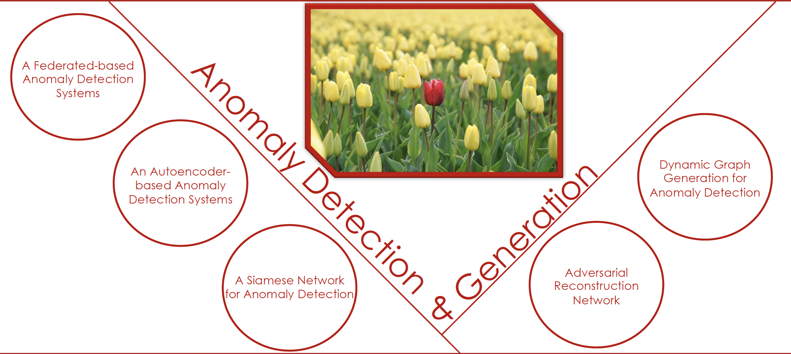

|

|
I defended my doctoral thesis entitled "Machine and Deep Learning Techniques for
Anomaly Detection and Generation"
on February 27, 2024
Abstract
Anomaly detection is a well-explored research domain focused on identifying unexpected
behaviors, i.e., anomalies, in data collection. The capability to devise robust anomaly
detection tools is an important research topic in machine and deep learning, spanning
diverse application domains. Even though anomaly detection has been studied and
investigated for a long time, it still is a hot and challenging research topic. One of
the main issues relies on the scarcity of labeled data, which makes supervised models
difficult to effectively train, leading to the definition and exploitation of unsupervised
approaches. In addition, even when a limited number of anomalies is accessible, it is often
insufficient to exhibit enough statistical power to define patterns necessary for any
classification technique. In response to the scarcity of information about anomalies,
recent efforts have focused on reinforcing detection with sophisticated data generation
tools. They successfully refine the learning process by generating data variants that expand
the outlier detector’s recognition capabilities. This thesis proposes deep-learning
approaches to anomaly detection, leveraging only the normal samples. The idea is to
learn a deep neural network such that the normal data exhibit low reconstruction error
or are concentrated closely in a low-dimensional space, causing anomalies to be elements
with high reconstruction error or mapped away from the normality patterns, thereby
making them isolated and, hence, detectable. Furthermore, to enhance the anomaly detector’s
capability, this thesis proposes a deep learning approach for anomaly generation
whose aim is to generate realistic anomalies, i.e., anomalies that lie on the boundary
of normality. Moreover, in data generation, this thesis also investigates the possibility
of generating complex temporal data, i.e., dynamic graphs, enhancing the detection of
deviant behaviors in such data. This thesis also delves into the definition of supervised
approaches tailored for scenarios where a limited amount of labeled data is shared across
various devices. Through multiple experiments and analysis, we demonstrate that the
proposed approaches effectively detect anomalies. Also, the generated anomalies can
boost the performance of the outlier detector, which can recognize existing anomalies
without needing information about them. Finally, we conclude this thesis by discussing
the limits of the proposed approaches and outlining some possible future directions.
[Slides]
|
{kind=link}